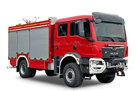
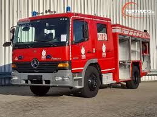
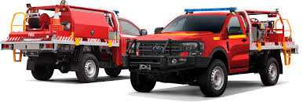

Нашите Пожарни Автомобили
Гордеем се с нашия модерен и разнообразен автопарк, проектиран да се справя с всякакви предизвикателства. Всеки автомобил е поддържан в отлично състояние и е оборудван с най-съвременните технологии за бърза и ефективна реакция при произшествия.
MAN TGM 18.290 – Основна водоноска
Този MAN TGM е гръбнакът на нашия флот, когато става въпрос за доставяне на голямо количество вода до мястото на инцидента. Изключително надежден и издръжлив, той е проектиран за продължителни операции по гасене на големи пожари.
- Основна функция: Транспортиране на вода и първоначално гасене
- Капацитет на вода: Прибл. 8000 литра
- Мощност на двигателя: 290 к.с.
- Екипаж: До 3 пожарникари
Mercedes Atego 1325 AF – Автомобил с помпа за бърза намеса
Mercedes Atego е нашият универсален автомобил за бърза реакция, оборудван с мощна помпа за ефективно подаване на вода и пяна. Той е идеален за градски условия и места, изискващи маневреност и бързина.
- Основна функция: Пожарогасене, подаване на вода и пяна
- Тип помпа: Високоефективна центробежна помпа
- Капацитет на вода: Прибл. 2500 литра
- Оборудване: Различни видове маркучи, струйници, инструменти за рязане и разпъване
Ford Ranger – Автомобил за труднодостъпни терени
Ford Ranger е незаменим за достъп до горски райони, пресечени местности или други труднодостъпни места, където по-големите автомобили не могат да преминат. Оборудван е за първоначално гасене на горски пожари и бърза реакция.
- Основна функция: Достъп до офроуд терени, горски пожари, първа реакция
- Задвижване: 4x4 с висока проходимост
- Капацитет на вода: По-малък резервоар за бърза реакция
- Оборудване: Специализирано за горски пожари, инструменти за спасяване